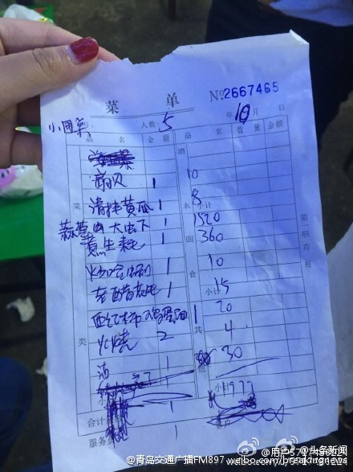
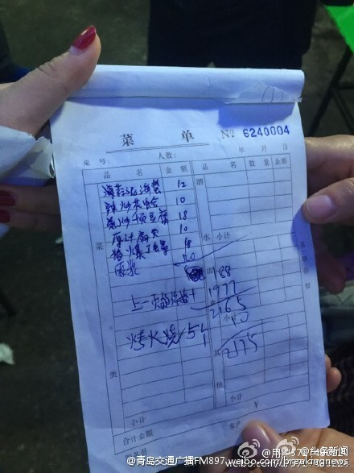
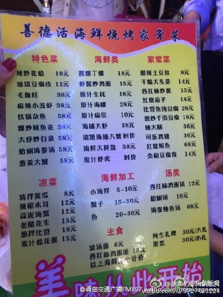
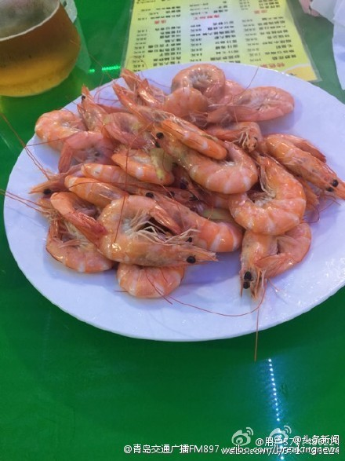

八十年代就有个电视剧《青岛有条杀人街》说的就是宰客现象，三十多年过去，还是没啥变化。//@ibuick:外地人没去对地方，别随便往乱七八糟大排档乱跑就对了，正经的 1500 块钱能在青岛吃海鲜吃死//@战争史研究WHS:青岛烧烤宰客早就声名远扬，比如外地游客在青岛吃烧烤，结帐时发现肉是按块算的@头条新闻:#新浪直播国庆出游#【大排档菜单上大虾每份38元，结账时一个38元】据@青岛交通广播FM897，有网友发微博称，在青岛一家名为“善德活海鲜烧烤家常菜”的大排档吃饭，菜单上写着海捕大虾38元，结账时发现，38元不是一份，而是一只。蒜蓉大虾一份吃了1520元。国庆黄金周全景播报：宅在家里看堵车 如此宰客 

 国庆黄金周全景播报：宅在家里看堵车 如此宰客
国庆黄金周全景播报：宅在家里看堵车 如此宰客